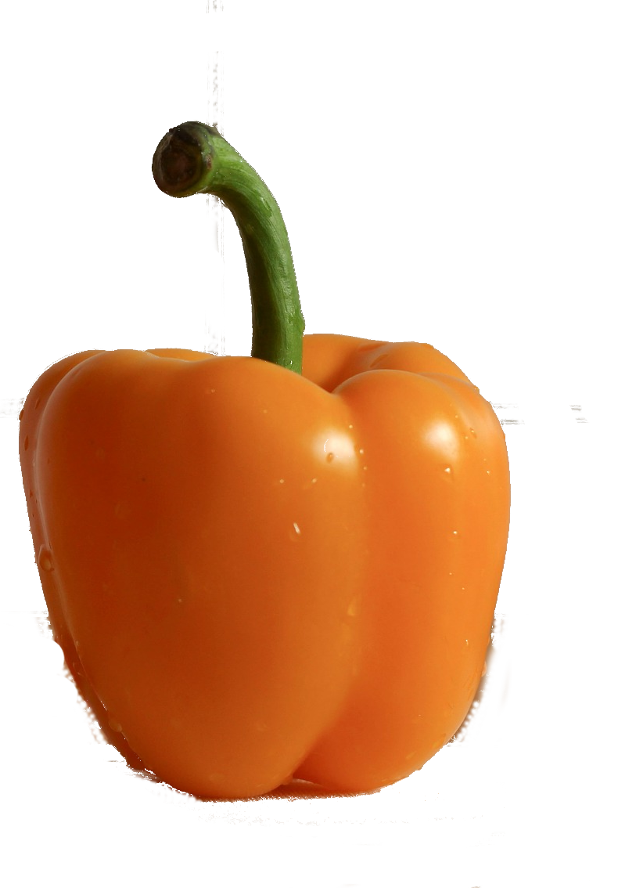

Pomarańczowa papryka

Papryka, syn. pieprzowiec (Capsicum L.) – rodzaj roślin należ±cych do rodziny psiankowatych. Przedstawiciele rodzaju pochodzą z Ameryki Południowej i Centralnej, obecnie rozpowszechnione na całym świecie. Gatunkiem typowym jest Capsicum annuum L
Słodka czy ostra? Przybierająca różne barwy papryka jest jedną z podstawowych przypraw. Warzywo spożywa się jednak nie tylko w proszku. Świeża lub uduszona papryka doskonale wzbogaci takie dania, jak omlet, leczo czy pizza. Roślina ta pozwoli nam schudn±ć, poprawi nastrój i doda wigoru. Czy wiesz, że papryka należy do witaminowych rekordzistek?
Papryka (Capsicum L.), podobnie jak bakłażan, należy do rodziny psiankowatych. Przedstawiciele jej rodzaju wywodzą się z upalnej części Ameryki, przy czym gatunkiem typowym jest Capsicum annuum (papryka roczna). Roślina ta wygląda jak niewielki krzew lub bylina i osiąga rozmiary od 50 do 100 cm. Owoce papryki rocznej stanowi± umiarkowanie soczyste jagody o wielkości od ok. 3 do 15 cm. Maj± grubą, skórzastą okrywę i występują w szerokiej gamie kolorystycznej, obejmującej swoim zakresem czerwień, zieleń, pomarańcz, żółć i fiolet. Charakterystyczną część budowy kwiatów tej rośliny stanowi dzwonkowaty kielich, którego barwa może być zielona, kremowa albo fiołkowa.